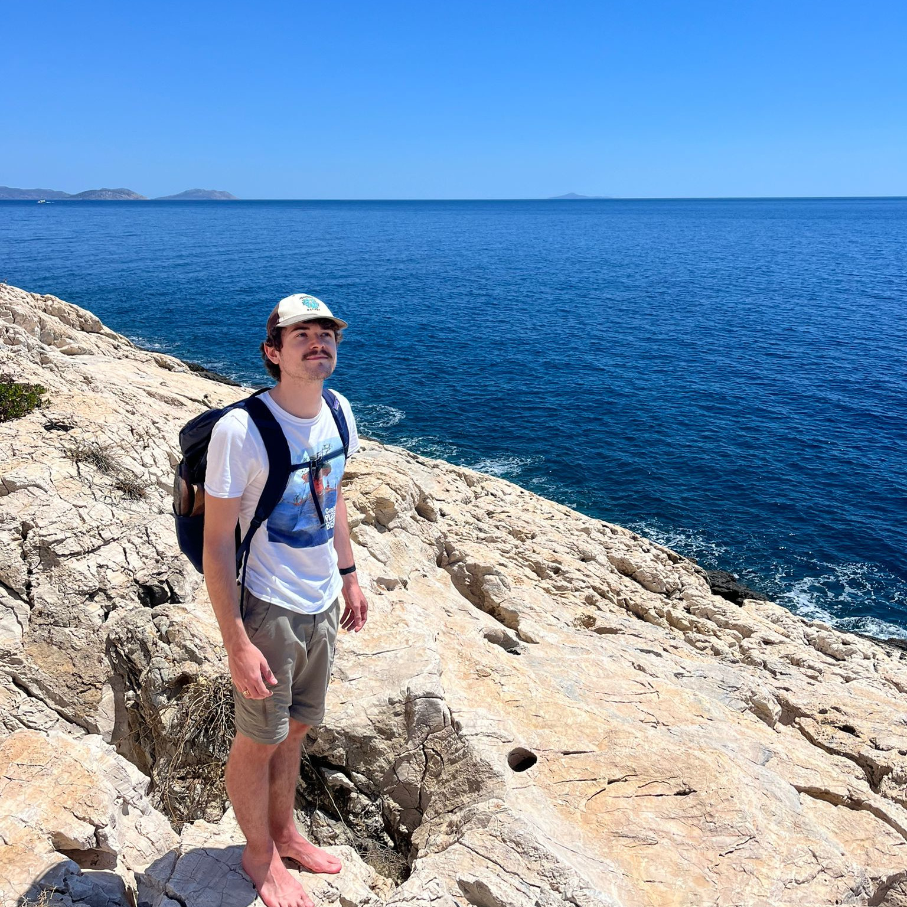
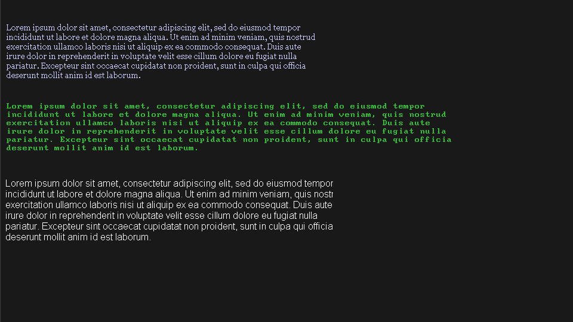
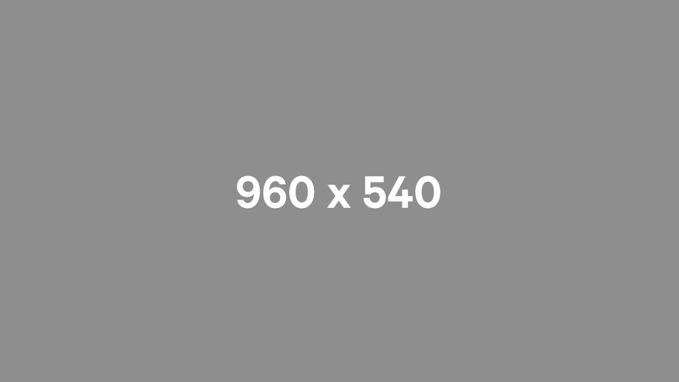
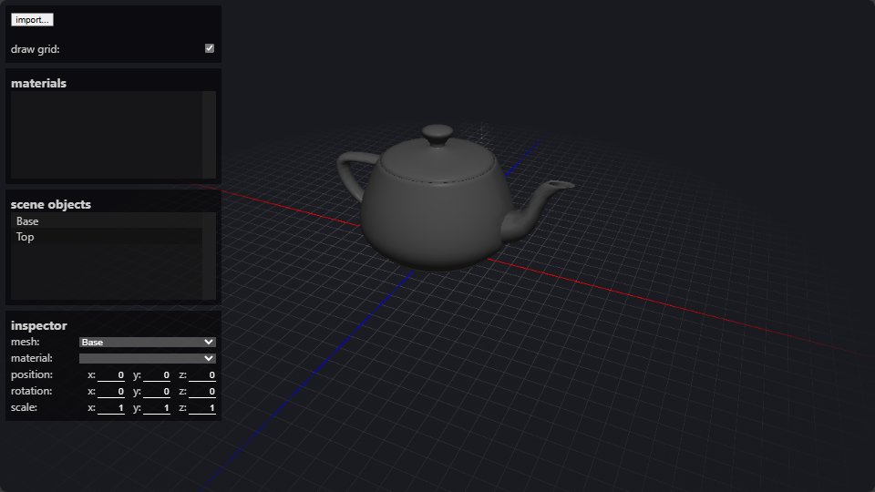
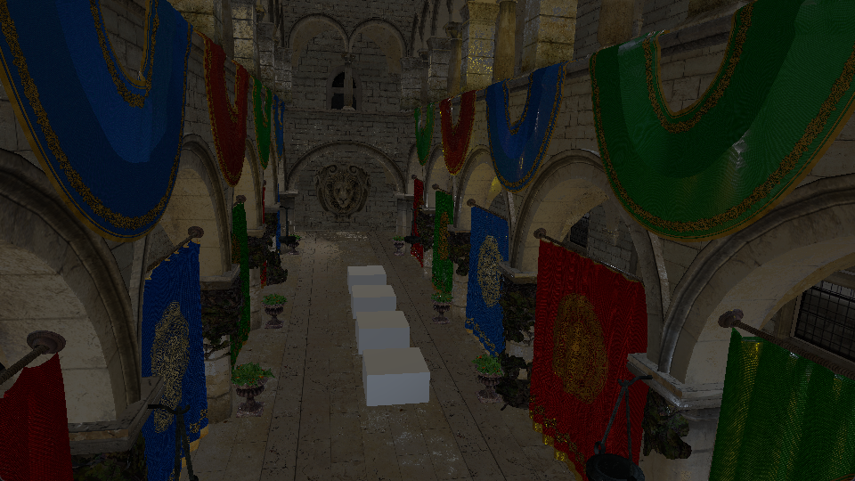
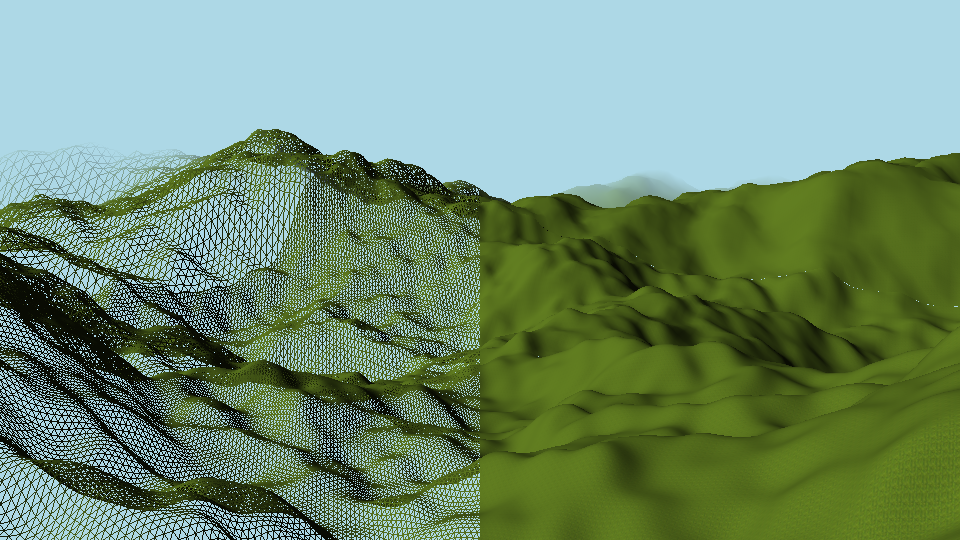

George McDonagh
Experienced Programmer

I am a professional software engineer with a background in game development and 3D applications.
For a summary of my professional work experience you can download my resume (48KB)
Link to my blog where I sometimes post articles about things I'm working on. I write these posts primarily for my own benefit, although I would be quite happy if I were to hear others found some value in them.
Projects
-
Font Rendering (OpenGL, C)

I haven't written anything for this project yet.
-
GLTF Parser, Renderer (OpenGL, C)

I haven't written anything for this project yet.
-
JSON Parser in C (C)
As part of my adventures in writing a glTF renderer in C I decided that I'd write my own JSON parser (the glTF format used JSON to describe the structure of the binary data buffers). At this point I was still fairly new to C coming from C++ so I thought it would be a good excercise in getting my head around the language and figuring out what works and what doesn't.
I wanted to make the API simple and clean with few dependencies, so it uses my own dyanmically-resizable arrays (think C++ std::vector) and hash table.
It was really important that I could rely on this library and so I did some rigorous testing with some large JSON files (7000+ lines) and made sure that there were zero memory-leaks with this nice memory monitoring tool I came across called Deleaker.
-
WebGL Scene Viewer (WebGL, GLSL, JS, HTML, CSS)

I wanted to play around with 3D rendering in the browser and so I decided to write a 3D scene viewer in JS using the widely-supported WebGL API.
You can view a working demo of the viewer here.
-
Binary Data Embedder (C)
This is a little tool I wrote when I wanted a way of making a 3D application that was a single executable file with zero resource files.
The program reads in some arbitrary binary blob and generates a source file and header file which can be compiled in to the target application executable.
-
Vulkan Renderer (Vulkan, C++)

After using OpenGL for nearly all of my lower-level rendering projects, I finally decided to take the plunge and learn Khronos Group's 'new' low-level graphics API: Vulkan.
Since I had heard a lot of discussion around how difficult it was to learn Vulkan I was quite apprehensive going in, but I was pleasantly surprised in the end with my experience. Indeed, Vulkan it perhaps less intuitive than the OpenGL API and sacrifices succinctness in the name of verbosity and control but it is incredibly well documented as one would expect from the Khronos Group.
-
Infinite Chunked Terrain Generator, Renderer (OpenGL, C)

I actually got the inspiration for this project from playing a lot of Valheim. I found the stylised lower-quality graphics charming and was inspired by the low-poly deformable terrain to write my own terrain generator/renderer.
To achieve the possibility of infinite terrain generation I decided to implement a 'chunk' system so that sections of terrain could be loaded in to memory independent of one another.
In order to achieve a decent fidelity of the terrain up-close while also being able to render far-away chunks of terrain without setting my GPU on fire I implemented a dynamic LOD algorithm. Essentially this means that the terrain chunks closer to the camera have a higher resolution of vertices than further away chunks. As the camera moves the chunks automatically regenerate and adjust their LOD so that there is a somewhat predictable and reasonable number of triangles being processed for rendering at any one time.
For this prototype there's a very simple shader I wrote that blends the most distant chunks of terrain with the background, creating this 'fog' effect.
-
OpenGL on Windows (Win32 API, OpenGL, C)
This project is the result of an exploration in to lower-level Windows application programming with the goal of decreasing third-party dependencies and executable size of some other projects. In the past I've used platform helper libraries such as GLFW 3 to handle window creation and platform integration.
The Win32 API is basically the API for Windows application development. This project serves as an example or a starting point for anyone interested in how you might create a Windows window for a C GUI program. Futhermore, this project provides an example of how you might create a window that uses modern OpenGL as a graphics context. By default a Windows window that's created with an OpenGL context only supports OpenGL 1.0. If you want anything more modern than that then it involves a bit more work.
-
Sōko-ban (JS, HTML Canvas)
A mobile-friendly Sōko-ban clone written for the browser in vanilla JS (ES6) using the Canvas API for 2D graphics.
-
Miscellaneous
Here are some other things I've made in the past.
A* Pathfinding implementation. HTML, JS, CSS
Sudoku puzzle interface. HTML, JS, CSS
Infograph generator showing you how many days you've lived against a 90 year lifetime. HTML, JS, CSS
Random string generator. HTML, JS, CSS
PONG clone. C#, XNA
Space Game 2000. XNA, C#
Wave Cave; A UE4 game jam team project. UE4, C++, UE Blueprints
A 2D dungeon-crawler I sometimes work on. HTML5 Canvas, JS, CSS
The website you're viewing right now (hosted on my Raspberry Pi!)
Contact
If you'd like to contact me you are welcome to send an email to me@bad.georgemcdonagh.robot.dev